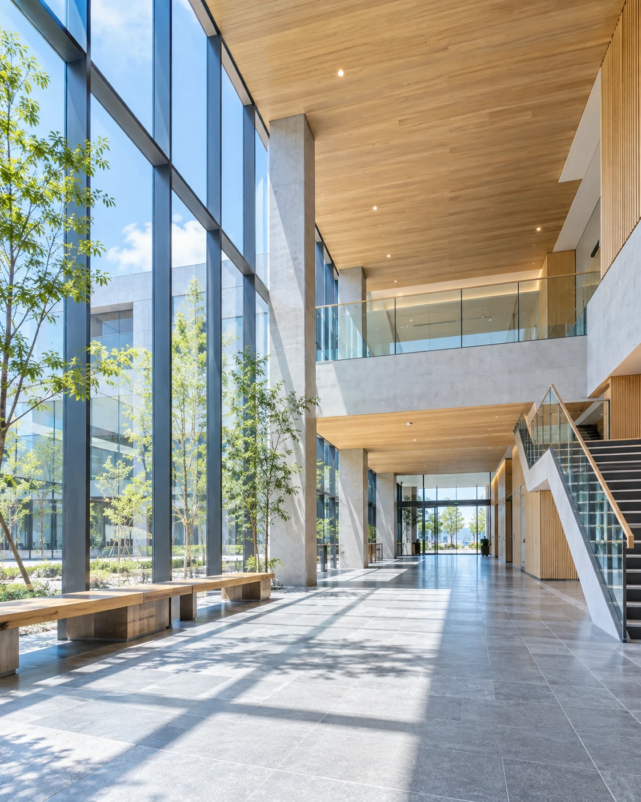

対話から、はじめる。
ご要望だけでなく、背景にある想いやお困りごとまで。予算と工程を共有し、納得できる計画を一緒に考えます。
人と、街と、その先へ。
BUILD THE FUTURE.
この街で暮らす、一人ひとりの明日へ。
私たちは、確かな技術とまっすぐな想いで、
福岡の未来を築いていきます。
01ABOUT US
ROOTED IN FUKUOKA. BUILDING TOMORROW.
住まいで過ごす、何気ない毎日。
新しいお店に、人が集まる瞬間。
働く場所から生まれる、次の挑戦。
建物の先には、いつも人の営みがあります。
株式会社 蒼建は、福岡を拠点とする総合建設会社。
一つひとつの声に耳を傾け、計画から施工、
その後の安心まで、誠実に向き合います。
02OUR BUSINESS

03OUR STRENGTH
特別な一棟も、日々を支える工事も。
目の前の仕事に、できる限りの誠実さを。
蒼建が大切にしている、3つの約束です。
ご要望だけでなく、背景にある想いやお困りごとまで。予算と工程を共有し、納得できる計画を一緒に考えます。
施工の確認と記録、安全への配慮を日々の基本に。完成後には見えなくなる部分こそ、手を抜かずに仕上げます。
お引き渡しは、新しいお付き合いの始まり。建物の変化や使い方の相談に、地域に根ざした距離感で応えます。
OUR PHILOSOPHY
今日の丁寧な仕事が、誰かの明日の安心になる。
その実感を、私たちの誇りに。
人を育て、技術を磨き、地域とともに歩んでいきます。
05RECRUIT
最初から、できなくても大丈夫。
先輩と考え、現場で学び、少しずつ自分の技術にしていく。昨日よりできることが増える、その喜びを仲間と分かち合おう。
CONTACT
土地のこと、建物のこと。まずは、お話を聞かせてください。